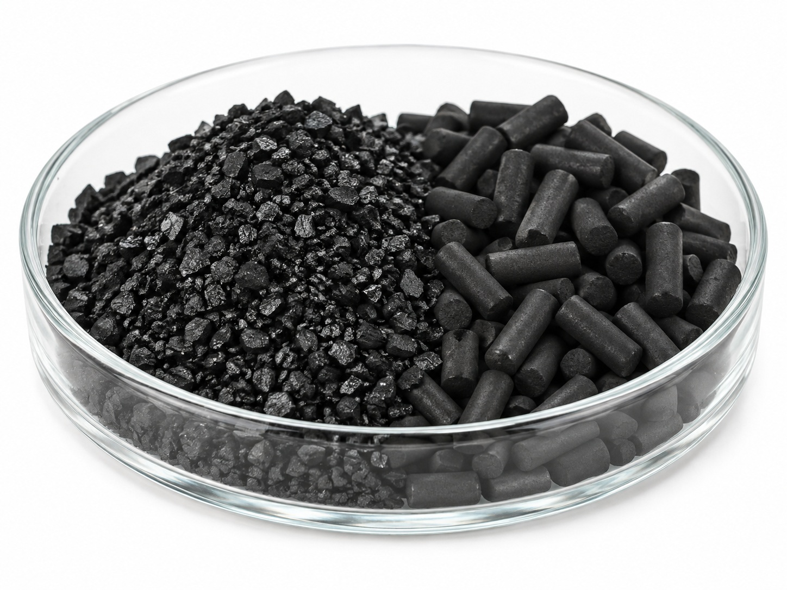
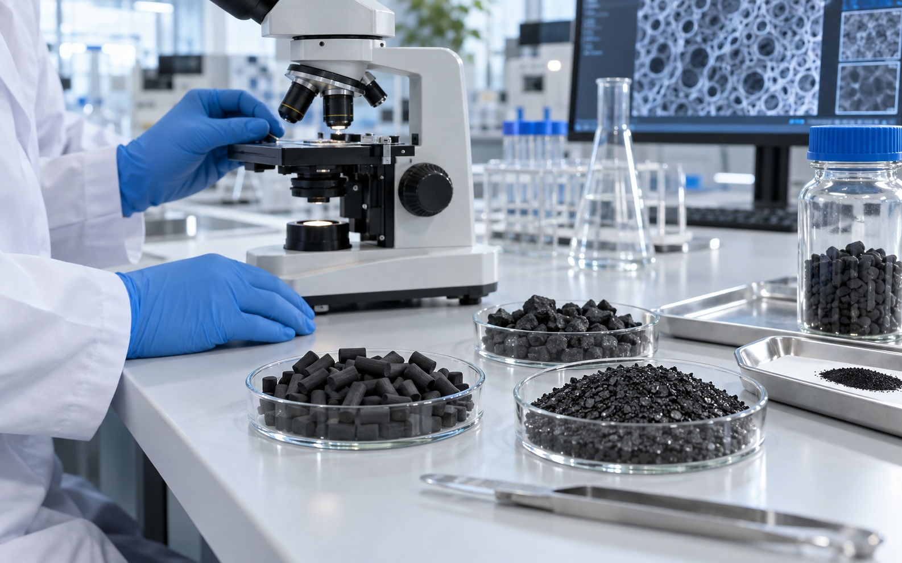
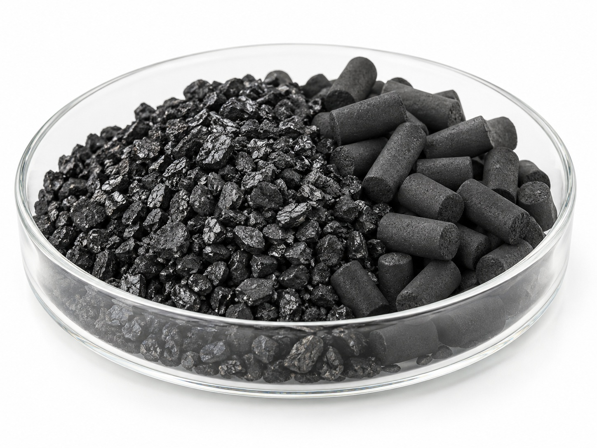
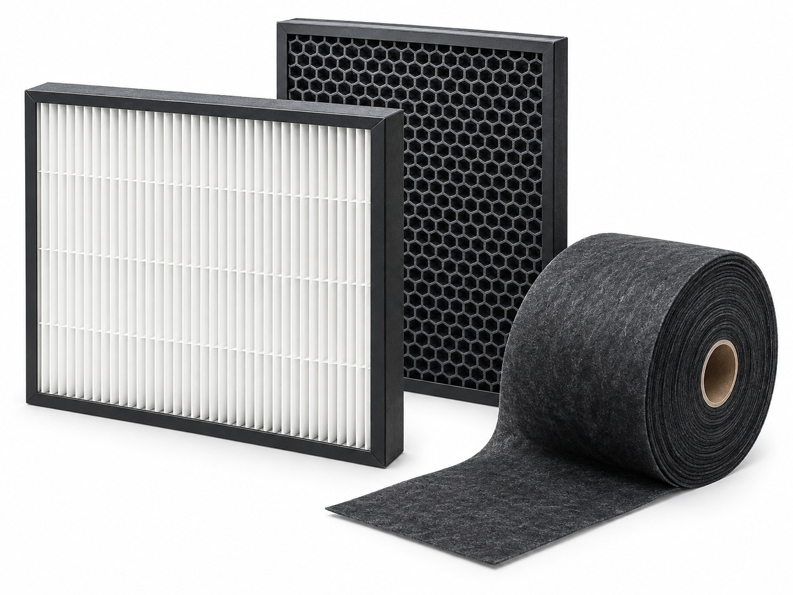
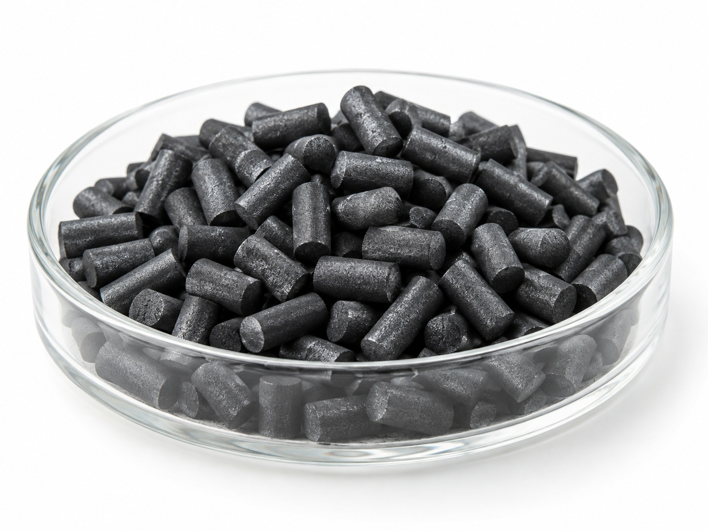

입상활성탄
야자각, 석탄, 목재 등의 원료를 활성화한 후 일정한 입도로 제조한 입자 형태의 활성탄입니다. 우수한 흡착성능과 취급성을 갖추고 있어 공기정화, VOC 제거, 악취 제거 및 수처리 등 다양한 분야에 폭넓게 적용할 수 있습니다.
관련 제품 보기 ↗

01제거 대상물질과 사용환경을 분석해 최적의 활성탄 원료·기공구조를 선정합니다.

02미세기공·중기공·대기공의 분포와 입도를 조절해 흡착성능을 최적화합니다.

03특정 물질에 대한 선택적 흡착을 위해 첨착·표면개질 처리를 적용합니다.
 04
04요오드가, BET 비표면적, CTC 등 시험을 통해 흡착성능을 검증·최적화합니다.

05풍량, 압력손실, 수명을 고려해 필터의 구조와 충전량을 설계합니다.
 06
06입고부터 출하까지 단계별 검사와 LOT 관리로 균일한 품질을 보장합니다.
야자각, 석탄, 목재 등의 원료를 활성화한 후 일정한 입도로 제조한 입자 형태의 활성탄입니다. 우수한 흡착성능과 취급성을 갖추고 있어 공기정화, VOC 제거, 악취 제거 및 수처리 등 다양한 분야에 폭넓게 적용할 수 있습니다.
관련 제품 보기 ↗
Impregnated Activated Carbon일반 활성탄에 특정 기능성 물질을 첨착하여 일반적인 물리흡착만으로 제거하기 어려운 가스상 오염물질에 대한 제거성능을 강화한 기능성 활성탄입니다. 제거 대상가스에 따라 적합한 첨착제와 활성탄을 선정하며, 물리흡착과 화학적 반응을 복합적으로 이용하여 특정 유해가스 및 악취물질을 효과적으로 제거합니다.
관련 제품 보기 ↗적용 제품과 목표 악취에 따라 소재와 층 구성을 조정합니다.
먼지 및 입자성 물질 포집
활성탄을 이용한 주요 냄새 성분 흡착
목표 악취성분에 적합한 기능성 흡착소재 적용
복합 악취에 대응하기 위한 탈취층 구성
잔여 냄새 및 미세 입자를 고려한 최종 필터링
음식물 처리방식 · 풍량 · 온도 · 습도 · 발생 냄새 특성 분석
목표 악취성분과 사용조건에 적합한 활성탄 및 흡착소재 선정
장착공간 · 압력손실 · 활성탄 충전량 · 공기 접촉시간 등을 고려한 구조 설계
고객 제품에 적용 가능한 맞춤형 필터 시제품 제작
탈취성능 및 사용조건을 평가하여 필터 사양 최적화
확정된 사양을 기준으로 안정적인 품질의 필터 생산
사용 환경과 요구 성능을 함께 검토하여 적합한 제품과 공정을 제안합니다.